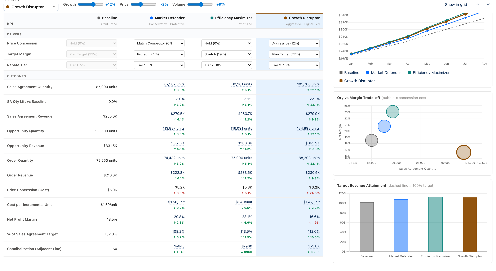
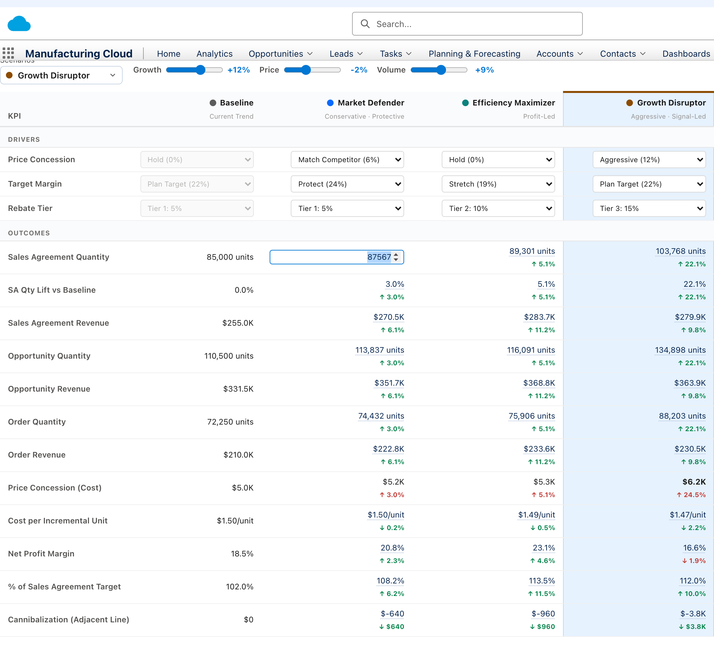
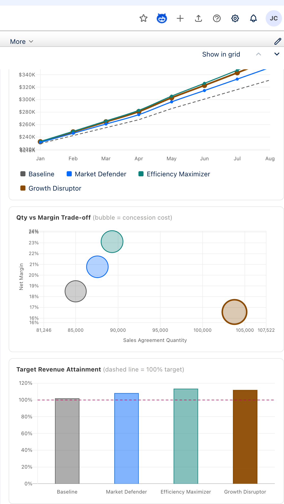

Prepared July 2026 · Competitor visuals are representative mockups built from public documentation — not product screenshots.
Our-solution images are live screenshots of the working prototype.
Executive Summary
Where we win, where we're at parity, where we trail
Our scenario planning is embedded directly in the forecasting grid as a progressive bottom drawer. That in-context model, business-semantic drivers, and in-table goal-seek are genuine differentiators. The enterprise incumbents lead on calculation scale, governance/versioning, and predictive + agentic AI.
WE LEAD
In-context planning — scenarios live inside the grid; no separate modeling app or context switch.
Business-semantic drivers — "Price Concession Depth: Match Competitor", not raw model formulas.
In-table goal-seek — edit a KPI target and the driver back-solves instantly.
Round-trip to the plan — "Show in grid" surfaces impacted cells + deltas to review & save.
AT PARITY
Side-by-side comparison — named scenarios as columns with deltas vs baseline.
Decision-support charts — revenue, trade-off, and target-attainment views.
The incumbents are modeling platforms you plan in; ours is planning where the work already happens. Our defensible edge is the last mile of decision-making — driver semantics a business user understands, goal-seek in the same table they read, and a one-click path from "what if" to reviewable edits in the live plan. The strategic gaps to close are engine scale, governance, and AI depth.
Scenario Planning — Competitive Analysis
Our Solution · Live Screenshots
The in-grid Scenario Drawer
Scenario planning is a persistent bottom drawer on the forecasting grid. It uses progressive disclosure: a collapsed strip for quick levers, expanding to a full comparison workspace — the planner never leaves the grid they were reading.
Collapsed strip — active scenario selector, quick levers (Growth / Price / Volume), and "Show in grid".

Expanded workspace — named scenarios as columns, business-semantic driver dropdowns, a full KPI comparison matrix with favorable/unfavorable deltas, and three decision-support charts.
Our Solution
Our Solution · Live Screenshots
Goal-seek & decision-support charts

Goal-seek — KPI cells are editable. Type a target (e.g. a revenue figure) and the relevant driver back-solves via a bisection solver, recomputing every dependent KPI.

Charts — revenue comparison (line), qty-vs-margin trade-off (bubble = concession cost), and target-revenue attainment (bar with 100% reference). Clicking a series focuses that scenario in the table.
What makes this distinctive
1
No context switch. The comparison overlays the same grid; "Show in grid" writes the scenario back as reviewable pending edits with deltas and a save action.
2
Semantics over formulas. Levers read as business choices ("Match Competitor", "Protect Margin", "Rebate Tier"), not cell math.
3
Goal-seek in place. Back-solving lives inside the comparison table itself — no separate solver dialog.
Our Solution
Competitor · Anaplan
Anaplan — connected planning at enterprise scale
Representative
◧ Anaplan · Scenario Comparison Board
Version: FY26 Baseline ▾Downturn ▾Aggressive ▾+ New versionSwitchover: Apr FY26
Driver / KPI
Baseline
Downturn
Aggressive
Volume growth %
3.0%
-4.0%
9.0%
Price index
100
96
103
Revenue ($M)
612
548
691
Op. margin %
18.5
15.1
20.4
Cash ($M)
210
171
248
⚙ PlanIQ forecast▤ Sensitivity🤖 CoModeler agent
Representative Anaplan pattern: versions/scenarios managed centrally, unlimited what-if comparison boards, ML (PlanIQ) and 2026 role-based AI agents.
AI — PlanIQ / Predictive Insights (ML) plus 2026 agentic layer (CoModeler, NL scenario generation, role agents).
Governance — ALM, decision lineage back to source systems, auditability.
vs Us: Anaplan leads decisively on engine scale, versioning/governance and AI. We lead on time-to-value and in-context UX — Anaplan typically needs modeling expertise / partners; ours is usable by a business planner with zero setup.
Competitor · Anaplan
Competitor · SAP
SAP — SAC (xP&A) + IBP Harmonized Scenarios
Representative
▦ SAP IBP · Planner Workspace — Scenario Lifecycle
Create▶ Simulate▤ Compare✔ Promote to baselineShine-through: onAuto-delete: +365d
Key figure
Baseline
Scenario A
Δ
Demand (units)
84,000
90,300
+7.5%
Supply / receipts
82,100
88,900
+8.3%
Projected stock
12,400
9,800
-21%
Revenue ($M)
255
272
+6.7%
SAC value-driver treeExcel add-in🤖 Joule
Representative SAP pattern (IBP 2602/2605): one scenario spans key figures + orders — create, simulate, compare, and promote to baseline with controlled shine-through; SAC adds value-driver-tree what-if.
What they do well
Harmonized Scenario Management (IBP) — unified lifecycle across time-series key figures and orders in one framework; create without simulating first, branch from a simulation, promote results (incl. orders) to baseline.
Controlled shine-through — precise control of how baseline changes flow into scenarios; scheduled deletion prevents scenario sprawl.
One-click simulation — statistical forecast in simulation mode, discard in one click; now in the Excel add-in too.
SAC (xP&A) — value driver trees, versions (public/private), data actions, predictive.
Deep ERP integration & Joule AI; enterprise governance.
vs Us: SAP leads on lifecycle rigor (promote-to-baseline, shine-through, orders+key-figures) and ERP depth. We lead on approachability — SAP's power sits behind planning-area configuration and a steeper UI; ours is immediate and grid-native.
Competitor · SAP
Competitor · Pigment
Pigment — modern Scenarios vs governed Versions
Representative
◑ Pigment · Compare Scenarios
☑ Base☑ Best case☑ Worst case☐ + ScenarioCompare to snapshot ▾
Metric
Base ①
Best ②
Worst ③
New bookings
$4.2M
$5.1M
$3.4M
Headcount
310
340
285
Gross margin
72%
74%
69%
Runway (mo)
18
22
13
ƒ Per-scenario formulas⧉ Copy inputs📈 Predictions
Representative Pigment pattern: multi-select scenarios shown side-by-side, each with independent inputs/formulas; Version dimension for governed cycles; Predictions for ML.
What they do well
Two-tier model — Scenarios for fast ad-hoc what-if (best/worst, sensitivity, short-term) vs a Version dimension for governed, auditable, repeatable cycles.
Compare Scenarios — check multiple scenarios to view side-by-side on grids/boards; edit inputs and formulas independently per scenario; copy inputs between scenarios.
Compare-to-snapshot — live plan vs a frozen snapshot without duplicating data.
Predictions — ML forecasting with accuracy measures & model comparison.
Modern, business-user-friendly UI — the closest peer to our design philosophy.
vs Us: The nearest match on UX and side-by-side comparison. Pigment goes deeper (per-scenario formulas, snapshots, ML). We counter with in-grid embedding, business-semantic drivers, and in-table goal-seek that Pigment doesn't surface as directly.
Competitor · Pigment
Competitor · Aera Technology
Aera — agentic decision intelligence
Representative
✦ Aera Decision Cloud · Simulate & Recommend
“Demand for SKU-118 just spiked 12% in the West. What should we do?”
Aera analyzed live data across 3 systems and simulated 4 responses:
Option
Fill rate
Margin Δ
Cost
Expedite from DC-2
98%
-1.2%
$41k
Reallocate East stock
95%
+0.3%
$12k
Do nothing
86%
0%
$0
Recommended: Reallocate East stock — best margin at lowest cost. Explainable · traceable to source · execute on approval.
Representative Aera pattern: conversational "situation → simulation → recommended action", with explainable trade-offs and governed one-click execution.
What they do well
Scenario & simulation models — what-if analysis that quantifies trade-offs and assesses outcomes before execution, composed from rules + AI/ML + live data.
Agentic reasoning — go from question to validated action in one conversation (2026); surfaces adjacent risks/opportunities.
Decision Data Model — "decision memory" learns from outcomes to improve future recommendations.
Governed execution — auto-execute or route for approval; fully auditable. Excel-like self-service Workspaces + real-time Calc engine.
2026 Gartner MQ Leader — Decision Intelligence.
vs Us: Different category — Aera is a decision-automation layer (mostly supply-chain/ops) that acts, not a planning grid. It far outpaces us on autonomy & recommendations. We are a human-driven planning surface; the lesson to borrow is recommend-and-explain.
Scores are a directional assessment for scenario/what-if planning specifically (not whole-platform breadth), based on public documentation as of mid-2026 and the current state of our prototype.
Capability Matrix
Gap Analysis & Roadmap Implications
Closing the gap without losing the edge
Protect & press our advantages
In-context drawer — keep scenario work glued to the grid; this is our identity.
Business-semantic drivers — expand the driver library (discounting, channel mix, promo) as curated dropdowns.
Goal-seek — extend from single-driver back-solve to multi-driver, constrained solves.
Round-trip to plan — the "Show in grid → reviewable edits → save/promote" loop is uniquely tight; make it the headline.
Gaps to close (priority order)
Scenario lifecycle & versioning — name, save, clone, and promote scenarios with an audit trail (table-stakes vs all four).
Predictive baseline — an ML/statistical forecast as the starting scenario (Anaplan PlanIQ / Pigment Predictions parity).
Recommend-and-explain — surface a suggested scenario + rationale (borrow from Aera), short of full auto-execution.
Governance — access control & lineage for when scenarios feed the official plan.
Now Solidify the core
Persist & name scenarios (save/clone/delete).
Assumptions saved per scenario; audit of who changed what.
Multi-driver goal-seek with bounds.
Next Add intelligence
ML predictive baseline scenario.
Sensitivity / tornado view across drivers.
"Suggested scenario" with explainable rationale.
Later Enterprise-grade
Versioning + governance + lineage.
Scale the calc model beyond the current grid.
Agent that drafts & compares scenarios on request.
Bottom line: We don't need to out-engine Anaplan or out-automate Aera to win the moment. Our wedge is the decision last-mile — the fastest path from a business question to a reviewed change in the live plan. Fund lifecycle + a predictive baseline + recommend-and-explain, and we reach parity on the fundamentals while keeping a UX lead none of them have in-grid.
Gap Analysis
Appendix
Method & sources
Method
Our screens are live screenshots of the working prototype's scenario drawer.
Competitor screens are representative mockups rebuilt from public product documentation and release notes — they illustrate the interaction pattern, not the exact pixels, and carry no copyrighted assets.
Scores are scoped to scenario / what-if planning, not full-platform breadth.
Prepared as an internal competitive assessment. Vendor names and trademarks belong to their respective owners. Representative mockups are for comparison of interaction models only.